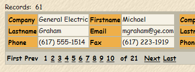
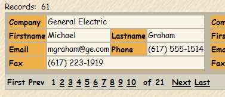
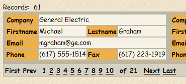

Using Colspan for Control Positioning
When designing a dialog component or a grid component with columnar formatting (where the Layout Options > Number of "Layout" Columns property is greater than 1), you may position controls by changing Row Properties > Column span value of a control.
The following examples show the effects of changing the Row Properties > Column span value for controls in a grid. In this case the grid has the following properties:
Layout Options > Number of "Layout" columns is set to 2
Layout Options > Repeating columns is set to 3
The grid has 6 fields.

The first step is to select the Company field and change its Row Properties > Column span value to 2. Note how it pushes the other fields down.

The final step is to select the Email field and change its Row Properties > Column span value to 2. Note how it pushes the Phone field down.

See Also
Using the Number of "Layout" Columns Feature
Limitations
Web publishing applications only.